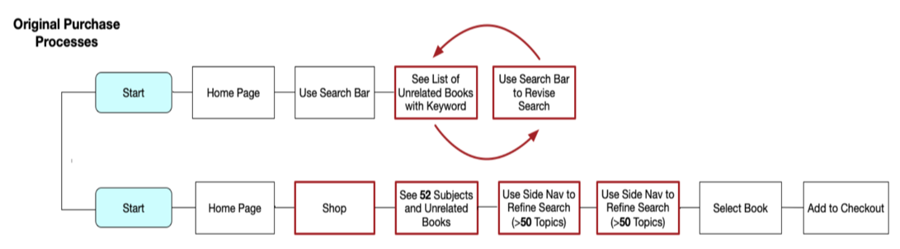
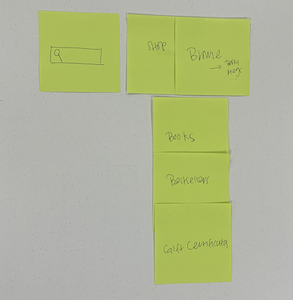
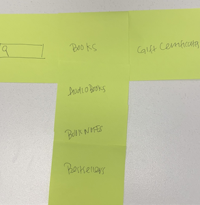
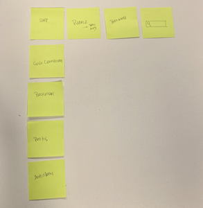
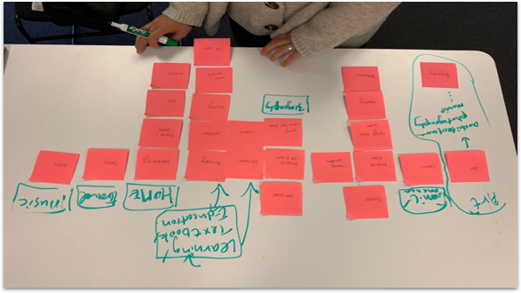
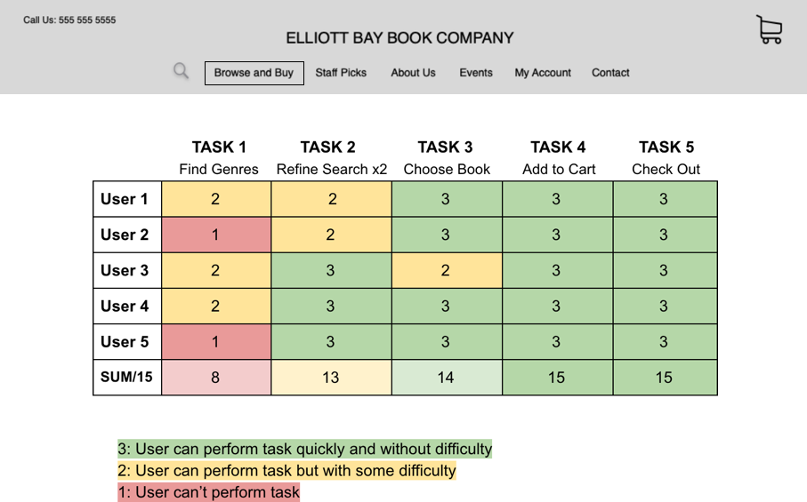
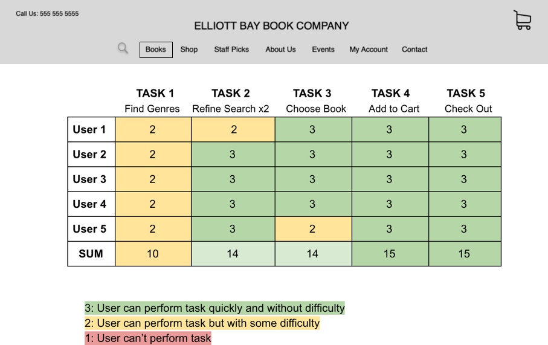
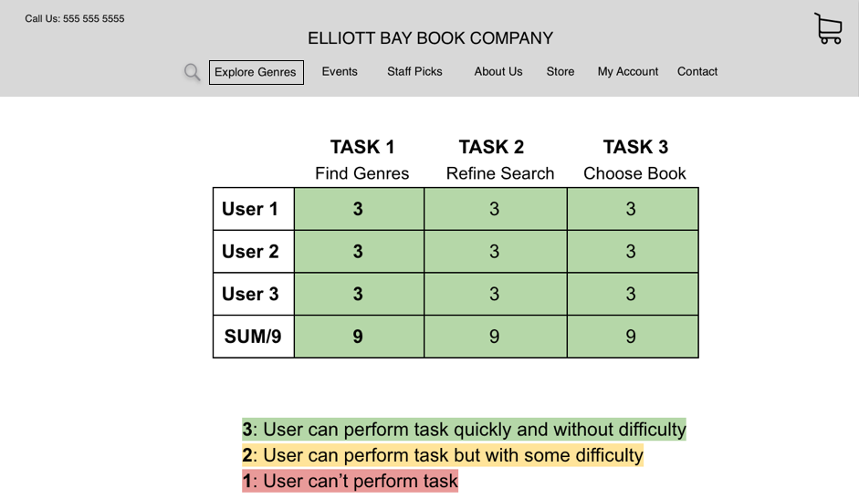

ELLIOTT BAY BOOK COMPANY
OVERVIEW
- SCOPE:
- The goal of this project was to redesign a section of the “Elliott Bay Book Store” based on user needs. This was an individual project however, I had a classmate help take notes while I interviewed real users at the bookstore. I had two weeks to complete the task.
- MY ROLE:
- I focused on research, information architecture, and interaction design.
- TOOLS:
- The tools I used were pen and paper for initial wireframes, Sketch for higher fidelity wireframes, InVision was used for creating an interactive prototype and Quicktime Player recorded users as they were testing the old web pages and the proposed solution.
DISCOVER
- BUSINESS GOALS & KPI's:
-
I talked to several staff members at “Elliott Bay” only to find that they were not clear on what their business goals were. So here is my best guess:
- Increase revenue by 15% by October 2019
- Increase percentage of people that add to cart by 10%
- Improve branding/ visual design to transition to a news forawrd site
- Decrease cart abandonment
- Increase the average LTV by $40 by having customers add more to cart
- MY ROLE:
-
I focused on research, information architecture, and interaction design.
- THE RESEARCH:
-
To begin the research process, I scripted a handful of questions to get a feel for the types of users that shop at Elliott Bay, what the current competition is, and what they like about Elliott Bay.
- How do you generally shop for books (online or in store)?
- Why do you prefer this method?
- What types of books do you generally shop for?
- Are you frequent customer of Elliot Bay Books?
- What brought you in today?
- THE RESPONSES:
-
- “ I love Elliott Bay but Amazon has better selection and prices.”
- “I love book stores but like the ease (and prices) of online shopping, plus finding hard to find books.”
- “I like to start reading the books in the store and I like the atmosphere of bookstores in general.”
- “I like the atmosphere of the bookstore and supporting local (stores).”
- THE COMPETITORS:
- After talking with Elliott Bay users and doing some online research, I discovered that the major competitors of Elliott Bay included Amazon and Barnes and Nobles. I also included some smaller local shops for comparison which included “Left Bank Books” and “Arundel Books”. I conducted an element analysis and heuristic evaluation of the competitors to find out what it is that makes them stand out.
- RESULTS:
-
- These were the major benefits of shopping at “Barnes and Nobles” and “Amazon”
- Thorough and Intuitive Navigation
- Easy search parameters
- Recommended books based on history/wishlist
- Categorized books by bestsellers
- Cheap prices
- Quick and easy checkout process
- Fast shipping
- SO WHAT?
- Elliott Bay Bookstore has one of the largest book selections if not the largest within Seattle, however with the current state of the website, there was no way to compete with the web presence of larger brands. This doesn’t mean that I wasn’t going to do my best to improve the current state of the bookstore in order to improve the user experience and increase profit margins for a well liked local bookstore. It was time to continue down the UX proccess with some user testing on the original website.
- THE TASK SCENARIO:
-
You are partial to Elliott Bay Book Company because you enjoy supporting local shops. You are looking for a book on dragons. Open the website's home page to start your search. Walk me through how you would navigate the website from finding a book to completing the checkout process.
Below is a sample a user's experience. Robert is a 61 y/o male with a basic competency in tech.
- Uses search bar feature and enters “dragons”
- User clicks on books in the dragon section but can not find an age recommendations
- User changes his search to ‘dragon books for teens’ ?
- “I would change my search”
- User is confused by the limited selection
- User needs direction to click the ‘shop’ button.
- User finds Juvenile in the side nav but clicks YA fiction because of confusion with terminology.
- “I don’t know what age ‘Juvenile’ is so I would go to YA”
- User finds a YA dragon book and considers his task to be complete
- After showing user the ‘Browse Books’ section user states “Maybe I should have browsed books instead of searching.”
- THERE'S A PROBLEM:
- It was clear from observing users using the website that there are some major flaws in design and architecture of the website. It was especially apparent with user who lacked some technical aptitude.
DEFINE
- PROBLEM STATEMENT:
- Mature customers need a better way to find and purchase books online because unclear navigation and categorization are both confusing and frustrating leading to early website abandonment.
- PERSONA:
- Simple layout with clear choices
- Suggestions based on past purchases
- Understanding of age and difficulty
- Overwhelmed by options
- Indistinct product categories
- Having to remember payment details
- Having no person to call for help
- CONTEXT:
- I chose Daniella after visiting “Elliott Bay” and getting a feel for the demographic that shopped at their store. After observing customers, talking to staff members, and interviewing users, I discovered that there is a wide range of people that shop at the bookstore. So I decided to dig into the website and see what the major UX issues were. What I discovered was that the website was hard to navigate and that the global navigation was unclearly labeled. Furthermore, the book category list was overwhelmingly long. This information lead me to choose Daniella as my target user. Some of her major needs include a simple layout with clear choices, suggestions based on past purchases, a simple checkout, and having a person to contact for help.
- SCENARIO:
- Daniella is buying a fantasy book for her teenage grandson’s birthday. She likes Elliott Bay Book Company because she enjoys supporting local shops. She opens the home page and is immediately confused by the page’s layout and poor navigation. She tries to search for genres using the search bar but gets stuck in a loop of searching for keywords and receiving unrelated book titles. She eventually discovers the “Shop” button is a link that will take her to a “Browse Books” section button but she is met with a list of 52 subjects and unrelated books. When she tries to refine her search, she is again overwhelmed by the number of book categories she must sort through to find the right subject and book. This leads to frustration and early website abandonment. 
- PROPOSED SOLUTION:
-
By creating a simple and intuitive way to browse books, users
will have more success finding their desired books and
completing the checkout process.

Let’s try to solve this problem through some more user research:
- CARD SORTING:
- I conducted with some card sorting to find some patterns that would help better categorize genres and understand where genres should live in the global navigation.
- KEY TAKEAWAY FROM THE BOOK CATEGORIES CARD SORT: TOO MANY CATEGORIES!
- Below is the condensed list of just 12 categories that users sorted books into most frequently:
- Best Sellers
- Children
- Travel
- Fiction
- Young Adult
- Art/Music
- Non Fiction
- Self Help
- Staff Picks
- SciFi/Fantasy
- Education
- GLOBAL NAVIGATION SORT:
-   
- KEY TAKEAWAY FROM GLOBAL NAVIGATION CARD SORT: USERS HAVE DIFFERENT OPIONIONS.
- When asked to arrange the links in the global navigation, users had differing opinions about where a user would find the link to buy books but most users agreed on “Browse and Buy”.
DANIELLA PETERSON
Daniella is the grandmother of a 15 y/o. Daniella buys online with moderate frequency because she knows it’s the best way to get specialist products and she appreciates the convenience of home delivery.
Tech empathy: Medium, Prefers Desktop
Needs from online store:
Pain Points:
BOOK CATEGOTIES OPEN CARD SORT
BOOK CATEGORIES CLOSED CARD SORT

DEVELOP
- AND NOW FOR SOME MORE TESTING:
-
I gave users 5 tasks. The first task was to find a genre that would take them to Dragons. The second task was to refine their search, the third to choose a book, the fourth to add it to cart, and finally, the fifth task was to check out.
Using information from the card sort, I started with “Browse and Buy” as the drop down where users could find book categories. What I found was that this was not as intuitive as I had hoped for. Users struggled with finding genres and also had some difficulty refining their search. So I tested “Books” next based on user Feedback.
- TIME FOR A REVISED PROBLEM STATEMENT:
-
I realised that my problem was not just the lack of an intuitive path to find book categories...
In addition to refined categorization, not only does a “Browse By Category” feature need to exist, it needs to be clearly labeled in order to effectively communicate its purpose to the user.
So I iterated on the naming convention one final time with the feedback that users wanted a very clearly labeled path to search genres. The new link name I used was “Explore Genres”.
THIS SEEMS INTUITVE …
“BROWSE AND BUY”: VERSION ONE NAVIGATION
LET'S TEST AGAIN:
“BOOKS”: VERSION TWO NAVIGATION
THE SOLUTION:
“BOOKS”: VERSION TWO NAVIGATION
DELIVER
- LESSONS LEARNED:
- I am not the user! Although I did multiple card sorts and usability testing, not enough early testing was specifically done to determine the most intuitve global navigation nomenclature.
- NEXT STEPS:
-
For future iterations I would:
- Highlight the “Staff Picks” section because it is a unique part of the Elliott Bay Culture
- Focus more on accessibility by increasing font sizing, wideing margins, and increasing contrast
- Create a color mockup that modernizes the webisite but also stays true to the branding